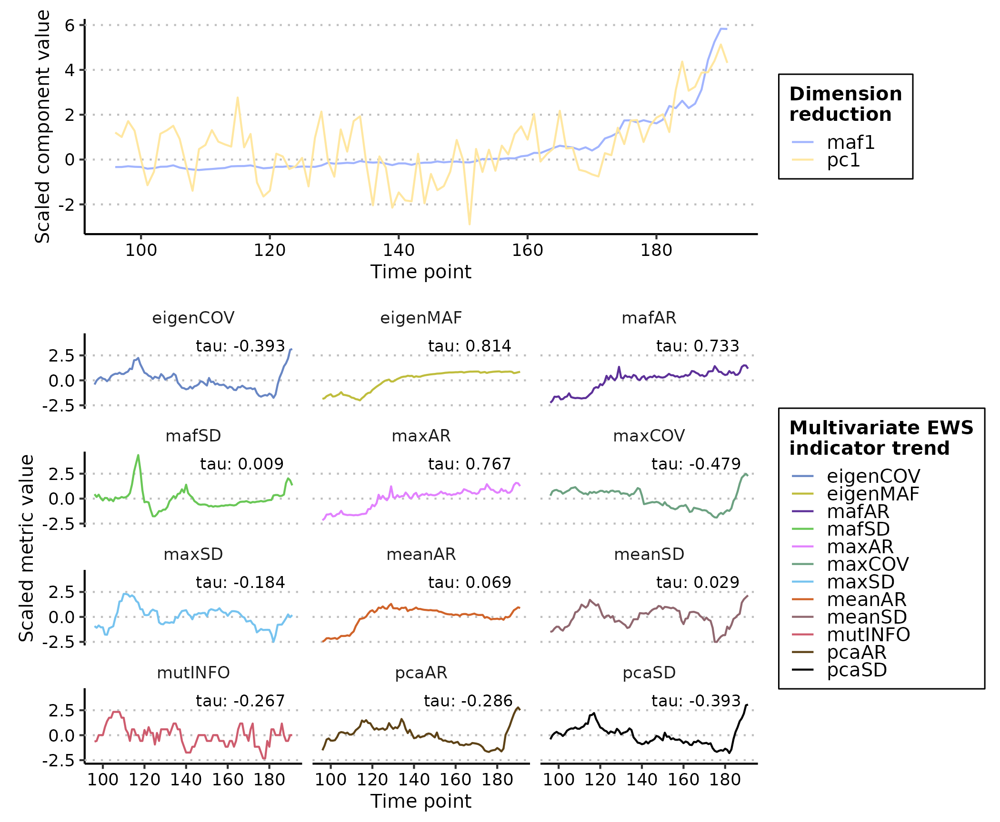
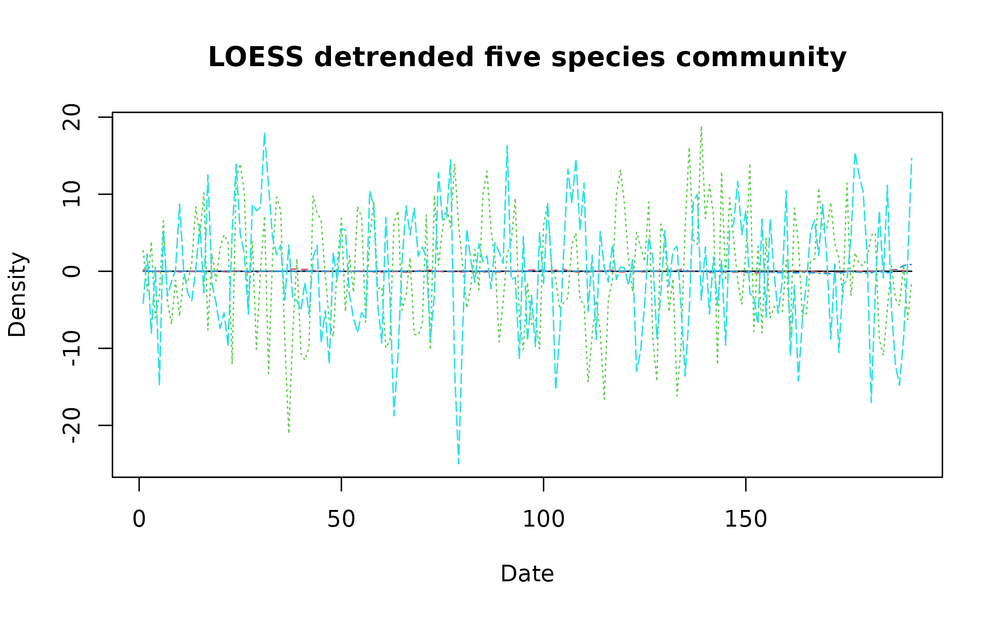
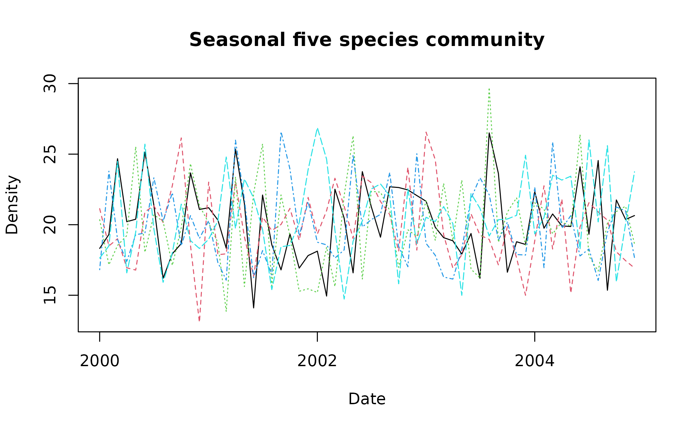

Performing Early Warning Signal Assessments
Duncan O’Brien
2024-05-13
Source:vignettes/ews_assessments.Rmd
ews_assessments.RmdAbout this tutorial
This tutorial introduces how to perform both univariate and
multivariate early warning signal (EWS) assessments using
EWSmethods. It will give examples of rolling and expanding
window approaches for univariate data, introduce trait-based composite
EWSs and then conclude with an example of multivariate EWSs.
Greater detail on each function can be found at the Reference page.
Getting started
set.seed(123) #to ensure reproducible data
library(EWSmethods)1. The data
EWSmethods comes bundled with two data objects which
allow you to practice using the uniEWS() and
multiEWS() functions in both transitioning and
non-transitioning data before applying it to your own use case.
"simTransComms" contains three replicate datasets of a
simulated five species community that has been driven to transition by
the introduction of an invasive species (following Dakos 2018). This
will be our multivariate dataset when using multiEWS()
although we may also use each time series in isolation in
uniEWS().
"CODrecovery" contains three replicate datasets of a
simulated cod ( Gadus morhua ) population that transitions from
an overfished to a recovered state following the relaxation of fishing
pressure. This data was first published by Clements et al.
2019. While univariate, "CODrecovery" provides extra
information on the body size of cod individuals which will improve
composite EWSs estimated by uniEWS().
We can visualise a community from each of these datasets using the code below:
matplot(simTransComms$community1[,3:7], type = "l", xlab = "Time", ylab = "Density", main = "Transitioning five species community")
plot(x = CODrecovery$scenario2$time, y = CODrecovery$scenario2$biomass, type = "l", xlab = "Year", ylab = "Abundance", main = "Recovering cod population")
These plots show that a transition takes place at
time ~= 180 in "simTransComms$community1" and
year ~= 2050 in "CODrecovery$scenario2".
EWSmethods helpfully provides this information in each
dataset under the inflection_pt column.
| simTransComms | CODrecovery |
|---|---|
| 191.5 | 2055 |
However, EWS assessments are only meaningful if performed on data
prior to a transition. As EWsmethods provides the time
point of transition for both datasets, we can truncate our time series
to pre-transition data only.
pre_simTransComms <- subset(simTransComms$community1,time < inflection_pt)
pre_CODrecovery <- subset(CODrecovery$scenario2,time < inflection_pt)In reality, EWSs will be assessed in real-time with the presence of past/present tipping points often unknown. If past transitions are known to have occurred, it may be prudent to follow the suggestions of O’Brien & Clements (2021) who show that the occurrence of a historic transition can mask an oncoming event and that only using data post the historic transition improves EWS reliability.
Now the data has been loaded and truncated, it can now be passed to
uniEWS() and multiEWS() to perform EWS
assessments.
2. Univariate EWSs
EWSmethods provides two computational approaches to
calculate univariate EWSs via the uniEWS() function -
rolling vs expanding windows. The difference between the two is evident
in the figure below but simply, rolling windows estimate EWSs in subsets
of the overall time series before ‘rolling’ on one data point and
reassessing, Conversely, expanding windows add data points sequentially
in to an ‘expanding’ assessment and then standardises against the
running mean and standard deviation of the previous window.
Rolling (A) vs expanding (C) window concept diagram. Panels B and D introduce the circumstance when a ‘warning’ is signalled in both approaches
Both computational approaches are able to calculate the same EWS
indicators. A brief outline of each can be found in the following table
as well as their reference code in uniEWS() for the
metrics = argument.
| EWS indicator | Description |
uniEWS() metric code |
|---|---|---|
| Standard deviation | Increasing variance/standard deviation is observed approaching a transition | "SD" |
| Coefficient of variation | Equivalent to SD as is simply SD at time t divided by the mean SD of the time series | "cv" |
| Autocorrelation at lag1 | Autocorrelation (similarity between successive observations) increases approaching a transition. The value of this indicator can be estimated as either the autocorrelation coefficient estimated from a first order autoregressive model or the estimated autocorrelation function at lag1 |
"ar1" - autoregressive model,
"acf"- autocorrelation function |
| Skewness | At a transition, the distribution of values in the time series can become asymmetric | "skew" |
| Kurtosis | Kurtosis represents the system reaching more extreme values in the presence of a transition. Due to the increased presence of rare values in the time series, the tails of the observation distribution widen | "kurt" |
| Return rate | The inverse of the first-order term of a fitted autoregressive AR(1) model. Return rate is the primary quantity impacted by CSD – return rate decreases as a tipping point is approached | "rr" |
| Density ratio | Spectral reddening (high variance at low frequencies) occurs near transition. The density ratio quantifies the degree of reddening as the ratio of the spectral density at low frequency to the spectral density at high frequency | "dr" |
Rolling windows
The rolling window approach is the most commonly used form of EWS
computation due to the work of Dakos et al 2012 and the
earlywarnings package. uniEWS() accepts a
method = and a winsize = argument which calls
the expanding window method and creates a rolling window
winsize% of the total time series length.
Lets use an example where we are interested in the autocorrelation,
variance and skewness of one of the five species in
pre_simTransComms. First we supply a dataframe/matrix of n
x 2 dimensions (first column is an equally time sequence and the second
is the abundance/biomass time series) and the EWS indicator metrics. The
remaining arguments specify the form of computation, window size and
plotting characteristics.
rolling_ews_eg <- uniEWS(data = pre_simTransComms[,c(2,5)],
metrics = c("ar1","SD","skew"),
method = "rolling",
winsize = 50)
plot(rolling_ews_eg, y_lab = "Density")
Note how all EWS indicators begin to trend upwards at
time ~= 170 which results in the positive Kendall Tau
correlation coefficient indicative of an oncoming transition/tipping
point.
Expanding windows
Let’s explore the alternative expanding window approach. All we need
to change in uniEWS() is the method =
argument, and replace winsize = with
burn_in =. Instead of specifying the size of the rolling
window, burn_in = dictates the number of datapoints
uniEWS() is to use to ‘train’ the algorithm. This mitigates
the high number of false-positive signals resulting from the short time
series length and high variability when few data points are supplied at
the beginning of assessment (O’Brien & Clements, 2021).
expanding_ews_eg <- uniEWS(data = pre_simTransComms[,c(2,5)],
metrics = c("ar1","SD","skew"),
method = "expanding",
burn_in = 50,
threshold = 2)
plot(expanding_ews_eg, y_lab = "Density")
Similar to the rolling window approach, EWS indicators calculated by
expanding windows have exceeded the 2σ threshold for more than two
consecutive time points and thus identified warnings from
time ~= 170. However we are more confident in this
conclusion as the composite metrics also display this warning
(ar1 + SD + skew). These composite metrics simple sum the
standardised individual indicator strengths together and are known to
provide a more reliable signal than lone indicators (Clements &
Ozgul, 2016).
Trait information
The final contribution by uniEWS() is the ability to
integrate multiple information sources in the assessment. For example,
including body size estimates improves assessment reliability by
reducing false positive rate whilst increasing the number of true
positives (Clements and Ozgul 2016, Baruah et al. 2020).
uniEWS() consequently accepts a trait =
argument where an additional trait time series can be combined with the
other abundance-based EWSs as a composite metric. This capability is
only available if method = "expanding" and
metrics = contains "trait"
trait_ews_eg <- uniEWS(data = pre_CODrecovery[,c(2,3)],
metrics = c("ar1","SD","trait"), #note "trait" is provided here
method = "expanding",
trait = pre_CODrecovery$mean.size, #and here
burn_in = 15, #small burn_in due to shorter time series
threshold = 2)
plot(trait_ews_eg, y_lab = "Density", trait_lab = "Mean size (g)")
3. Multivariate EWSs
A more powerful and informative form of EWS are multivariate EWSs. These indicators combine multiple time series/measurements of the focal system to provide a community level assessment of transition risk.
There are two primary forms of multivariate EWS, those which are
averaged univariate EWS across all time series and those which are
assessments made on a dimension reduction of all representative time
series. A brief outline of each can be found in the following table as
well as their reference code in multEWS() for the
metrics = argument. See Weinans et al. (2021) for
a rigorous testing of these multivariate EWSs in a simulated system.
| Multivariate EWS indicator | Description |
multiEWS() metric code |
Average or dimension reduction technique |
|---|---|---|---|
| Mean standard deviation | Average variance across all time series representing the system | "meanSD" |
Average |
| Max standard deviation | The variance of the time series with the highest variance of all assessed time series | "maxSD" |
Average |
| Mean autocorrelation at lag1 | Average autocorrelation across all time series representing the system | "meanAR" |
Average |
| Max autocorrelation at lag1 | The autocorrelation of the time series with the highest autocorrelation of all assessed time series | "maxAR" |
Average |
| Dominant MAF (maximum autocorrelation factor) eigenvalue | The minimum eigenvalue of the system following MAF dimension reduction | "eigenMAF" |
Dimension reduction |
| MAF autocorrelation | The autocorrelation of the data projected on to the first MAF – i.e. the autocorrelation of the first MAF. | "mafAR" |
Dimension reduction |
| MAF standard deviation | The variance of the data projected on to the first MAF – i.e. the variance of the first MAF | "mafSD" |
Dimension reduction |
| First PC (principal component) autocorrelation | The autocorrelation of the data projected on to the first PC – i.e. the autocorrelation of the first PC | "pcaAR" |
Dimension reduction |
| First PC standard deviation/ Explained variance | The variance of the data projected on to the first PC – i.e. the variance of the first PC | "pcaSD" |
Dimension reduction |
| First PC standard deviation/ Explained variance | The variance of the data projected on to the first PC – i.e. the variance of the first PC | "pcaSD" |
Dimension reduction |
| Dominant eigenvalue of the covariance matrix | The maximum eigenvalue of the covariance matrix between all representative time series | "eigenCOV" |
Neither |
| Maximum covariance | The maximum value of the covariance matrix between all representative time series. | "maxCOV" |
Neither |
| Mutual information | The ‘amount of information’ one time series contains on another. | "mutINFO" |
Neither |
Using multiEWS() we can estimate each of these
multivariate indicators in the same way as uniEWS() -
specifying the method =, winsize = and/or
burn_in = - but must provide a n x m dataframe/matrix of
all representative time series. The first column must again be an
equally spaced time sequence.
A rolling window assessment would therefore be coded as such:
multi_ews_eg <- multiEWS(data = pre_simTransComms[,2:7],
metrics = c("meanAR","maxAR","meanSD","maxSD","eigenMAF","mafAR","mafSD","pcaAR","pcaSD","eigenCOV","maxCOV","mutINFO"),
method = "rolling",
winsize = 50)
plot(multi_ews_eg)
Many of these indicators are postively correlated with time and therefore are ‘warnings’.
We could also use expanding windows to achieve a similar result.
Note - no composite metric is computed in
multiEWS() as it is currently unknown how combining
multivariate EWS indicators influences prediction reliability.
multi_ews_eg2 <- multiEWS(data = pre_simTransComms[,2:7],
method = "expanding",
burn_in = 50,
threshold = 2)
plot(multi_ews_eg2)In this circumstance, many of the indicators are warning at different
times (e.g. "eigenMAF" at time ~= 65 or
"meanAR" at time ~= 100) but that the vast
majority are warning in the last 20 time points. This highlights the
usefulness of expanding windows over rolling as the exact time point of
warning can be determined, and supports Weinans et al.’s (2021)
suggestion that there is no superior multivariate EWS indicator; the
best fit depends on the scenario the system is subject t0.
FAQ
1. How do I interpret EWSs?
Rolling windows
The simplicity of the rolling window approach also limits its usefulness. A ‘warning’ is indicated when an EWS displays a strong positive Kendall Tau correlation with time. However, it is unclear what constitutes a ‘strong’ correlation in this context with published warnings ranging from 0.5 through to 0.9 (Dakos et al. 2012, Dablander et al. 2022, Southall et al. 2022). The strength of correlation therefore appears to be context dependent and system specific.
An alternative approach suggested by Dakos et al. (2012) is to generate random permutations of the assessed time series and then compare the estimated Kendall Tau coefficients to that of the ‘true’ time series. If the true coefficient is stronger than 95% of the permuted coefficients then that represents a warning.
Expanding windows
Expanding windows have a stronger evidence base for what constitutes a ‘warning’. Clements et al. 2019 show that two consecutive transgressions of the 2σ threshold reduce false-postive rates and improve the number of true-postives. This has been validated by Southall et al. 2022 although they suggest that more than two consecutive signals should be aimed for.
2. Do I need to detrend my data?
The is a body of work that suggests detrending may be necessary to
improve the reliability of early warning signal indicators (Dakos et
al. 2012, Gama Dessavre et al. 2019, Lenton et
al. 2012). EWSmethods therefore provides a simple
detrending function detrend_ts() which provides four
methods of detrending a time series:
| Detrending method code | Description |
|---|---|
linear |
Linear detrending - returns the residuals of a fitted linear model between the time index and time series |
loess |
Local polynomial regression smoothing - subtracts a smooth curve fitted by local polynomial regression from the observed time series |
gaussian |
Gaussian kernel smoothing - subtracts a smooth curve estimated by a kernel based weighted moving average from the observed time series |
first.difference |
First differencing - subtracts the lagged time series from the unlagged time series |
Example:
detrend_dat <- detrend_ts(data = pre_simTransComms[,2:7], method = "loess", span = 0.75, degree = 2)
matplot(x = detrend_dat$time, y = detrend_dat[,2:6], type = "l", xlab = "Date", ylab = "Density", main = "LOESS detrended five species community")
The current consensus is that detrending is required prior to univariate EWS analysis. However for non-average multivariate indicators, we suggest assessments should be made on non-detrended data as the trend is informative. Mutual information in particular suffers following detrending.
3. My data is seasonal/contains cycles. Can I still use Early Warning Signals?
Early warning signal indicators are particularly sensitive to cyclical data as the repeated non-linearity throughout the year/cycle period will be interpreted as a transition initially, before masking future cycles and tipping points. It is therefore sensible to deseason seasonal data prior to assessment.
EWSmethods provides a suite of average and time series
decomposition deseasoning techniques via the deseason_ts()
function. This function takes a n x m dataframe of time series to be
deaseasoned. The first column must be a vector of dates with the
increment = and order = arguments indicating
the data resolution (year, month, day) and the order of the date vector
(ymd/dmy/ydm). The form of deseasoning can then be selected using the
method = argument.
Lets create some dummy monthly data that we can deseason.
spp_data <- matrix(nrow = 5*12, ncol = 5)
seasonal_cycle <- 20*sin(2*pi*(1:5*12)/12)
spp_data <- sapply(1:dim(spp_data)[2], function(x){
spp_data[,x] <- ts(rnorm(5*12,mean = 20, sd = 3) + seasonal_cycle, freq = 12, start = c(2000, 1)) #add seasonal cycle to random noise
})
multi_spp_data <- cbind("time" = base::seq(base::as.Date('2000/01/01'), base::as.Date('2004/12/01'), by = "month"), as.data.frame(spp_data))
matplot(x = multi_spp_data$time, y = multi_spp_data[,2:6], type = "l", xlab = "Date", ylab = "Density", main = "Seasonal five species community")
As multi_spp_data is random, there are few pronounced
cycles but for the sake of this tutorial, deseason_ts()
would be applied to it as such:
deseas_dat <- deseason_ts(data = multi_spp_data, increment = "month", method = "average", order = "ymd")
#> data successfully aggregated into monthly time steps
matplot(x = deseas_dat$date, y = deseas_dat[,2:6], type = "l", xlab = "Date", ylab = "Density", main = "Deseasoned five species community")The method = "stl" argument shows that we have chosen to
deseason using LOESS (locally weighted smoothing) by estimating the
cyclical component for each time series and then subtracting it.
method = "decompose"/method = "x11" perform a similar
process but use classical decomposition and x11 ARIMA modelling (Ladiray
& Quenneville, 2001) respectively. method = "average"
is the simplest method where the average increment value is estimated
for each unique increment and that value subtracted from each data point
that shares that increment key. deseason_ts() simply
provides the default procedure for each of these methods and
consequently we visualise the results of deseason_ts()
before using it in downstream analyses.
In our example, we can see that large monthly values shared across multiple years have been shrunk - e.g. the black dashed species at ~2001 - whereas anomalous values have been maintained - e.g. the green dotted species at ~2002.75.
References
Clements, C.F. & Ozgul, A. (2016) Including trait-based early warning signals helps predict population collapse. Nature Communications, 7, 10984. doi:10.1038/ncomms10984
Clements, C.F., McCarthy, M.A. & Blanchard, J.L. (2019) Early warning signals of recovery in complex systems. Nature Communications, 10, 1681. doi:10.1038/s41467-019-09684-y
Cleveland, R.B., Cleveland, W.S., McRae, J.E., & Terpenning, I.J. (1990) STL: A seasonal-trend decomposition procedure based on loess. Journal of Official Statistics, 6, 1, 3–33. http://bit.ly/stl1990
Dablander, F., Heesterbeek H., Borsboom D. & Drake J.M. (2022) Overlapping timescales obscure early warning signals of the second COVID-19 wave. Proceedings of the Royal Society B , 289, 20211809. doi:10.1098/rspb.2021.1809
Dakos, V. (2018) Identifying best-indicator species for abrupt transitions in multispecies communities. Ecological Indicators, 94, 494–502. doi:10.1016/j.ecolind.2017.10.024
Dakos, V., Carpenter, S.R., Brock, W.A., Ellison, A.M., Guttal, V., Ives, A.R., et al. (2012) Methods for detecting early warnings of critical transitions in time series illustrated using simulated ecological data. PLoS One, 7, e41010. doi:10.1371/journal.pone.0041010
Gama Dessavre, A., Southall, E., Tildesley, M.J. & Dyson, L. (2019) The problem of detrending when analysing potential indicators of disease elimination, Journal of Theoretical Biology, 481, 183-193. doi:10.1016/j.jtbi.2019.04.011
Ladiray, D., & Quenneville, B. (2001) Seasonal Adjustment with the X-11 Method. Springer. doi:10.1007/978-1-4613-0175-2
Lenton T M., Livina V.N., Dakos V., van Nes E.H. & Scheffer M. (2012) Early warning of climate tipping points from critical slowing down: comparing methods to improve robustness Philosophical Transactions of the Royal Society A 370, 1185–1204. doi:10.1098/rsta.2011.03047
O’Brien, D.A. & Clements, C.F. (2021) Early warning signal reliability varies with COVID-19 waves. Biology Letters, 17, 20210487. doi:10.1098/rsbl.2021.0487
Persons, W.M. (1919) General considerations and assumptions. The Review of Economics and Statistics, 1, 1,, 5–107. doi:10.2307/1928754
Southall E., Tildesley, M.J. & Dyson, L. (2022) How early can an upcoming critical transition be detected? medRxiv 2022.05.27.22275693. doi:10.1101/2022.05.27.22275693
Weinans, E., Quax, R., van Nes, E.H. & van de Leemput, I.A. (2021) Evaluating the performance of multivariate indicators of resilience loss. Scientific Reports, 11, 9148. doi:10.1038/s41598-021-87839-y